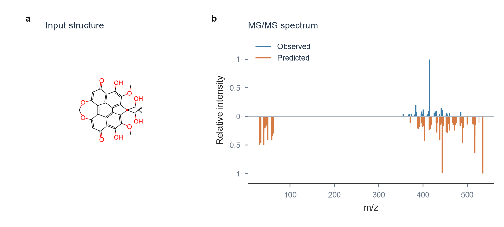

使用 ICEBERG 预测 MS/MS
在指定采集条件下预测分子的碎片质量和强度。
验证与独立测试
在 MassSpecGym 上给 ICEBERG 比较了 189 组峰强变换、前体峰权重与保留峰数设置。验证集和测试集各抽取 384 种结构，分别有 280 和 327 种结构获得可评分预测。在同一批 327 种测试结构上，默认模型的平均余弦相似度为 0.5050，验证集选中的设置为 0.5112。差值的配对 95% 区间为 [-0.0004, 0.0127]，网页继续使用原模型输出。
输入是什么
Field |
Meaning |
|---|---|
|
分子结构与记录中的离子/加合物类型，例如 [M+H]+ 或 [M+Na]+。 |
|
模型支持的碰撞能与仪器条件。 |
|
记录中的前体 m/z；按作者接口解释输入条件。 |
输出是什么
Field |
Meaning |
|---|---|
|
m/z 与相对强度对；图中显示预测强度最高的 100 个峰。 |
|
与全部实测参考峰比较的余弦/熵相似度，同时统计跳过记录。 |
真实运行案例
下面展示示例的输入、预测与参考。下载 JSON 可获取完整数值数组及更多示例。

SVG · PNG · Full input/output JSON


示例 2

示例 3

展开查看实际输入与输出字段
{
"input": {
"smiles": "C/C1=C\\[C@@H](C)C/C=C/[C@H]2[C@@H]3O[C@]3(C)[C@@H](C)[C@H]3[C@H](Cc4c[nH]c5ccccc45)NC(=O)[C@]32C(=O)/C=C/C(=O)[C@@H]1O",
"adduct": "[M+Na]+",
"collision_energy": "35.0",
"instrument": "Orbitrap",
"precursor_mz": 551.2511
},
"sample_id": "MassSpecGymID0000403",
"output": {
"predicted_peaks_top100": {
"length": 100,
"first_values": [
[
93.06987621515076,
0.0043686628341674805
],
[
129.0573002311496,
0.004620126914232969
],
[
130.065125248125,
0.07967650890350342
],
[
131.07295026510042,
0.011109611950814724
]
]
}
},
"reference": {
"observed_peaks": {
"length": 12,
"first_values": [
[
160.0366,
0.03803803803803804
],
[
240.0992,
0.03803803803803804
],
[
287.1152,
0.04704704704704705
],
[
289.0945,
0.042042042042042045
]
]
}
},
"metrics": {
"cosine_similarity": 0.9412847417548776,
"entropy_similarity": 0.6221104979157452,
"predicted_nonzero_bins": 100,
"reference_nonzero_bins": 12
}
}
实际评测结果
Dataset / scope |
Model / variant |
Metric |
Value |
|---|---|---|---|
recorded evaluation |
recorded model |
cosine_similarity |
0.4625 |
recorded evaluation |
recorded model |
entropy_similarity |
0.369847 |
模型与方法
ICEBERG 接收分子结构、加合物、碰撞能和仪器类型，通过碎片与强度预测模块生成 MS/MS 峰表。
使用余弦相似度与熵相似度比较预测谱和实测谱。
复现方式
Notebook with executed figures · Quick Start
python -m openmolspec_bench run --workspace /path/to/OpenMolSpec \
--tasks ms.forward.iceberg --limit 8 --output results/ms-forward-iceberg-new.json
调用模型与微调
from openmolspec.model import MSPredictor
model = MSPredictor(model='iceberg', source='/path/to/ms-pred',
weights='/path/to/weights', python='/path/to/ms-env/bin/python')
result = model.predict(smiles=smiles, adduct='[M+H]+',
collision_energy=20., instrument='Orbitrap')
微调使用 作者训练模块。准备分子独立的 train/val，包含结构、采集条件、实测峰强度及所选架构需要的碎片目标。ICEBERG 对应 ms_pred.iceberg.train_gen、ms_pred.iceberg.train_inten；GLACIER 提供 ms_pred.glacier.train_joint 及联合对比训练。启动前对照发布配置和各模块的 --help。 ICEBERG 碎片生成对有效原子决策使用二元交叉熵，强度模块支持余弦或熵目标。GLACIER 联合／对比损失随配置变化，报告微调时须注明具体变体。
来源报告与 SHA-256 指纹
ms_iceberg_32_molecules_20261116.json — SHA-256
7b403aa40d8478ff3ff8ee93ed6bec4151493d88eb0d2521f037542889c443ee
参考文献
Wang, R., Manjrekar, M., Mahjour, B., Avila-Pacheco, J., et al. Neural Spectral Prediction for Structure Elucidation with Tandem Mass Spectrometry. bioRxiv (2025). doi:10.1101/2025.05.28.656653. Source
Bushuiev, R., Bushuiev, A., de Jonge, N. F., Young, A., et al. MassSpecGym: A benchmark for the discovery and identification of molecules. Advances in Neural Information Processing Systems 37, Datasets and Benchmarks Track (2024). arXiv:2410.23326. Source